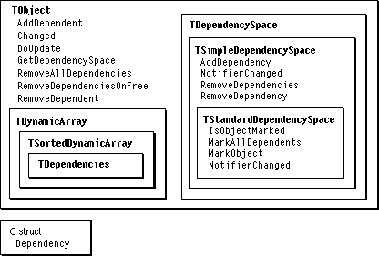

Overview
MacApp's dependency mechanism allows an object to be registered as a dependent of another object and to be notified of changes in the object on which it depends. A notifier is an object that has one or more dependents--when the notifier changes, it informs its dependent objects of the change. An object can have multiple dependents and multiple notifiers, and one object may be both a notifier and a dependent.A dependency space stores dependency relationships between objects and encapsulates a mechanism for notifying dependent objects when an object changes. MacApp defines
TDependencySpaceas an abstract superclass for dependency spaces and defines two subclasses,TSimpleDependencySpaceandTStandardDependencySpace.By default, a MacApp application has one dependency space, referenced by the global variable
gMacAppDependencies. This instance is created in theTApplicationmethodDoMakeDependencySpaceand defaults to an object of typeTStandardDependencySpace. The default dependency space can be accessed using the methodTObject::GetDependencySpace.The section "Dependencies", in Chapter 3, "Core Technologies," covers the following topics:
This chapter provides additional information about changes and updates, and also supplies recipes for performing specific operations with dependencies in your application. Figure 26-1 shows the classes and methods used to provide dependency support.
- "Basic Operations on Dependencies"
- "Storing Dependency Relationships"
- "Establishing and Removing Dependencies"
- "Iterating Over Dependents and Notifiers"
- "Change Notification and Command Objects"
- "Updating Algorithms"
Figure 26-1 Dependency classes and methods

Changes and Updates
Your application informs an object that it has changed by calling the object'sChangedmethod.void TObject::Changed(ChangeID theChange, TObject* changedBy);You call an object'sChangedmethod so that it can perform any operations it needs to and notify its dependents that it has changed.The parameter
theChangeis equivalent to a long integer value. A command object, notifying its dependents when the command is committed, sends a command number fortheChange. A control object that synchronizes two or more controls in a dialog box might send itsfEventNumbervalue to notify its dependent controls. Table 19-1 on page 462 lists event number and change notification constants defined by MacApp.The
changedByparameter represents the object that caused the change. It can be a command object,NULL, or the caller ofChanged.In the
TObjectclass, theChangedmethod calls theNotifierChangedmethod of the object's default dependency space. TheNotifierChangedmethod contains the updating algorithm for a particular dependency space class, which ensures that theDoUpdatemethod of any dependent objects will be called.DoUpdateis declared as follows:void TObject::DoUpdate(ChangeID theChange, TObject* changedObject, TObject* changedBy, TDependencySpace*dependencySpace);TheDoUpdatemethod does nothing inTObject. You overrideDoUpdateto let your object respond to a change in one of its notifiers. The parameters to theDoUpdatemethod describe the change, the changed object, the changed-by object, and the dependency space in which the change occurred. ADoUpdatemethod normally checks the change ID before taking any action. This is particularly important for dependencies that exist in a dependency space defined byTStandardDependencySpace, becauseDoUpdateis called even if the object is only an indirect dependent of the object that changed.